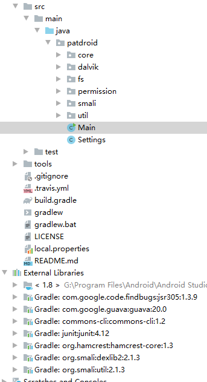
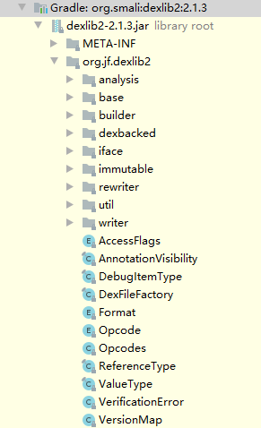
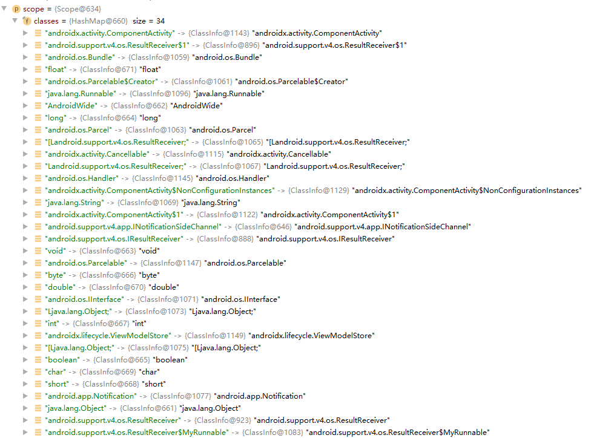
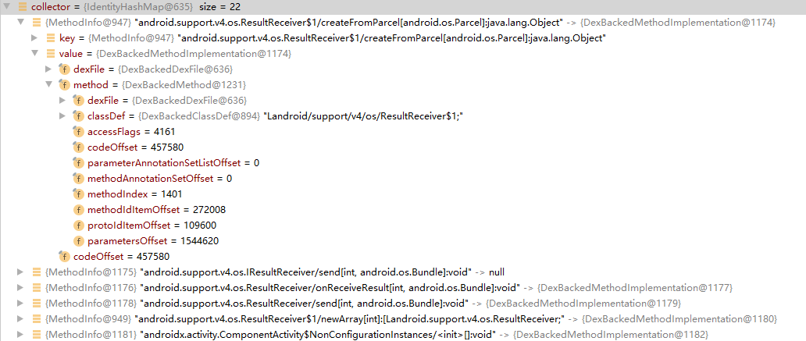
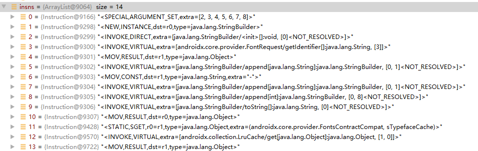

PATDroid框架源码分析
PATDroid是一个apk分析框架，能够提取并解析dex中的classes、methods、fields和指令，作者在此基础上实现了AppAudit系统，能够实现污点分析、fuzzing等功能，但是并未开源。不过我们可以在PATDroid的基础上，根据需要自己实现污点分析过程。
PATDroid论文地址：https://dl.acm.org/doi/pdf/10.1145/3106237.3106250
PATDroid源码地址：https://github.com/mingyuan-xia/PATDroid
论文纯英文的，有13页，程序分析部分可阅读第六节，文章主题是测试动态授予权限对应用行为的影响，读起来实在头大，我们直接分析源码。
从Github下载zip源码包，解压缩之后直接导入Android Studio或IDEA，等待gradle下载依赖包即可。
PATDroid结构如图所示：

- core：提供class、method、field、java基础类型的representation；
- dalvik：Dalvik指令解析；
- fs：模拟一个简易的Android文件系统
- permission：获取指定Android API版本的权限，及其对应的接口；
- smali：使用dexlib2，从dex中提取并转译classes、methods、fields和指令;
- util：日志等工具类。
PATDroid框架中解析dex，以及后文提取classes、methods、fields和指令的过程都使用了dexlib2包中的方法。
源码地址： https://github.com/JesusFreke/smali/tree/master/dexlib2/src/main/java/org/jf/dexlib2
关于dexlib2的资料很少，只能通过源码了解一下它的功能和实现原理了。
dexlib2的目录如下图：

iface：其中的所有类均为接口，主要作用为优化代码结构；
base：其中均为实现了iface中refrence和value接口的抽象类，具体实现了
hashCode,equals和compareTo方法，用来表示dex文件中的一些基础数据结构；builder：是支撑将smali文件写回dex文件的类库；
dexbacked：解析输入的dex文件，dex文件中的所有类、方法和指令都能够在这个文件夹下找到相应的类来表示；
immutable，rewtiter和writer：都是需要修改dex文件时用的，配合build使用；
util：工具类。
PATDroid程序入口在Main中，关键语句为：
1 | Scope scope = new Scope(); |
1. 初始化SmaliClassDetailLoader对象
public static SmaliClassDetailLoader fromApkFile(ZipFile apkFile, int apiLevel, boolean translateInstructions)
此方法首先提取apk中所有的dex文件，再调用dexlib2包的DexBackedDexFile.fromInputStream()方法进行解析，得到一个DexFile[]数组变量。
PATDroid中解析dex文件的代码为：
1 | DexFile[] dexFiles = new DexFile[n]; |
这里涉及到dexlib2中DexFile,Opcodes,DexBackedDexFile几个类：
Opcodes:Opcodes.forApi(apiLevel)即根据输入的APILevel初始化smali操作指令（有的指令是Android后面版本新增的，因此需要根据APILevel判定）；DexFile: 有两个方法getClasses()和getOpcodes()，即获取dex中的所有类（Set<? extends ClassDef>），和与此dex相关的Opcodes;DexBackedDexFile: 继承了BaseDexBuffer,实现了DexFile。在构造函数中，根据DexHeader格式直接从Dex文件读取String、type、proto、field、method、class的count和offset，作为DexBackedDexFile对象的字段，方便后续解析。1
2
3
4
5
6
7
8
9
10
11
12stringCount = readSmallUint(HeaderItem.STRING_COUNT_OFFSET);
stringStartOffset = readSmallUint(HeaderItem.STRING_START_OFFSET);
typeCount = readSmallUint(HeaderItem.TYPE_COUNT_OFFSET);
typeStartOffset = readSmallUint(HeaderItem.TYPE_START_OFFSET);
protoCount = readSmallUint(HeaderItem.PROTO_COUNT_OFFSET);
protoStartOffset = readSmallUint(HeaderItem.PROTO_START_OFFSET);
fieldCount = readSmallUint(HeaderItem.FIELD_COUNT_OFFSET);
fieldStartOffset = readSmallUint(HeaderItem.FIELD_START_OFFSET);
methodCount = readSmallUint(HeaderItem.METHOD_COUNT_OFFSET);
methodStartOffset = readSmallUint(HeaderItem.METHOD_START_OFFSET);
classCount = readSmallUint(HeaderItem.CLASS_COUNT_OFFSET);
classStartOffset = readSmallUint(HeaderItem.CLASS_START_OFFSET);
PS：Dex文件解析：https://www.cnblogs.com/aWxvdmVseXc0/p/11879093.html
然后，dexFiles传入SmaliClassDetailLoader构造方法，最终返回一个SmaliClassDetailLoader类的对象:
1 | return new SmaliClassDetailLoader(dexFiles, translateInstructions, false); |
2. loadAll(Scope)方法
上文SmaliClassDetailLoader对象初始化完成，调用loadAll()方法对dex进行解析，提取其中的classes、methods、fields和指令。
参数Scope类是一个存放classes的容器。其重要字段classes，以Map格式存放了ClassInfo:
1 | private final HashMap<String, ClassInfo> classes = new HashMap<String, ClassInfo>(); |
ClassInfo对象能够唯一的表示一个类。
1 | /** |
前半部分为逐个dex分析从DexBackedDexFile解析得到的dexFile，将classes信息放入scope对象中，并在解析过程中从dex读取method地址信息。


后半部分，调用MethodImplementationTranslator的translate()方法，逐个method解析出每一行的内容。

至此，dex解析最终完成，所有信息都存放在Scope对象中。
下一步，就是构建方法调用图、控制流图、数据流图等。
参考文献：